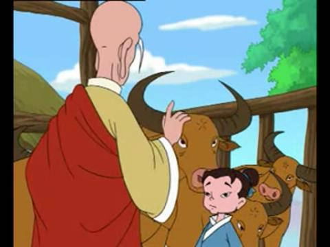

陆羽弃佛从文

唐朝著名学者陆羽，从小是个孤儿，被智积禅师抚养长大。陆羽虽身在庙中，却不愿终日诵经念佛，而是喜欢吟读诗书。陆羽执意下山求学，遭到了禅师的反对。禅师为了给陆羽出难题，同时也是为了更好地教育他，便叫他学习冲茶。在钻研茶艺的过程中，陆羽碰到了一位好心的老婆婆，不仅学会了复杂的冲茶的技巧，更学会了不少读书和做人的道理。当陆羽最终将一杯热气腾腾的苦丁茶端到禅师面前时，禅师终于答应了他下山读书的要求。后来，陆羽撰写了广为流传的《茶经》，把祖国的茶艺文化发扬光大！